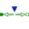
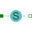

PartialTwoFlangesComponent with two translational 1D flanges |
|
Information
This information is part of the Modelica Standard Library maintained by the Modelica Association.
This is a 1D translational component with two flanges. It is used e.g., to built up parts of a drive train consisting of several base components.
Connectors (2)
Extended by (2)
|  |
Modelica.Mechanics.Translational.Sources Input signal acting as torque on two flanges |
|  |
Modelica.Mechanics.Translational.Components Definition of relative state variables |